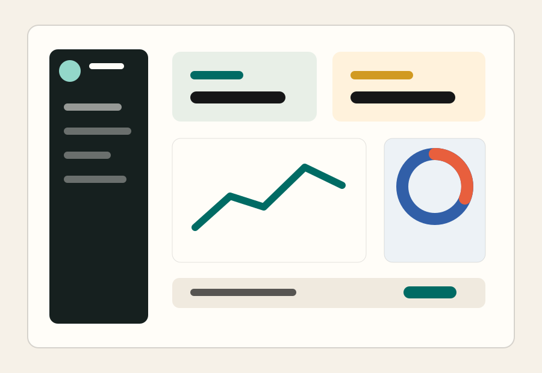

Live Prioritaeten
Kritische Tickets, blockierte Aufgaben und Eskalationen stehen sichtbar oben.
Operations Platform
Nova Ops buendelt Aufgaben, Service-Level und Live-Metriken in einer Oberflaeche, die auch unter Druck lesbar bleibt.

Funktionen
Die Landing Page positioniert Nova Ops als ruhiges Werkzeug fuer operative Teams, die Prioritaeten schneller erkennen muessen.
Kritische Tickets, blockierte Aufgaben und Eskalationen stehen sichtbar oben.
Wiederkehrende Routinen, Check-ins und Handover bleiben in einem Arbeitsfluss.
Fuehrungskraefte sehen Trends, ohne sich durch operative Details zu kaempfen.
"Nova Ops hat unsere Morgenabstimmung halbiert und trotzdem mehr Transparenz geschaffen."
VP Operations, Scale-upNaechster Schritt
Ein Demo-CTA mit klarer Erwartung senkt die Reibung fuer B2B-Entscheider.